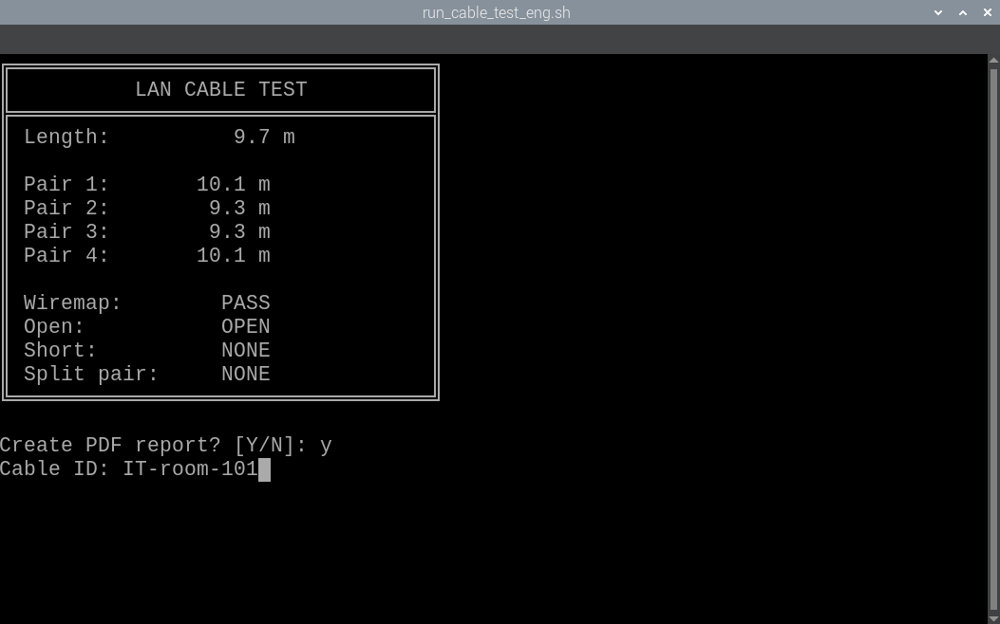
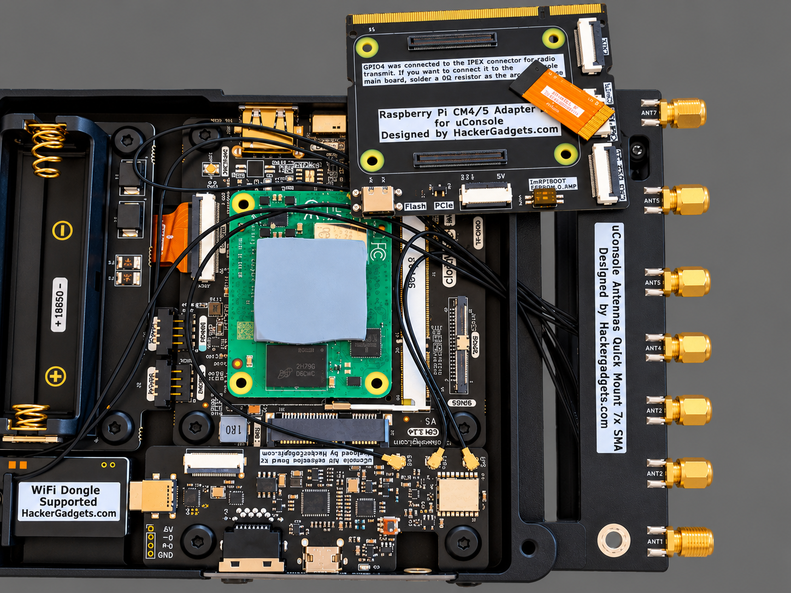
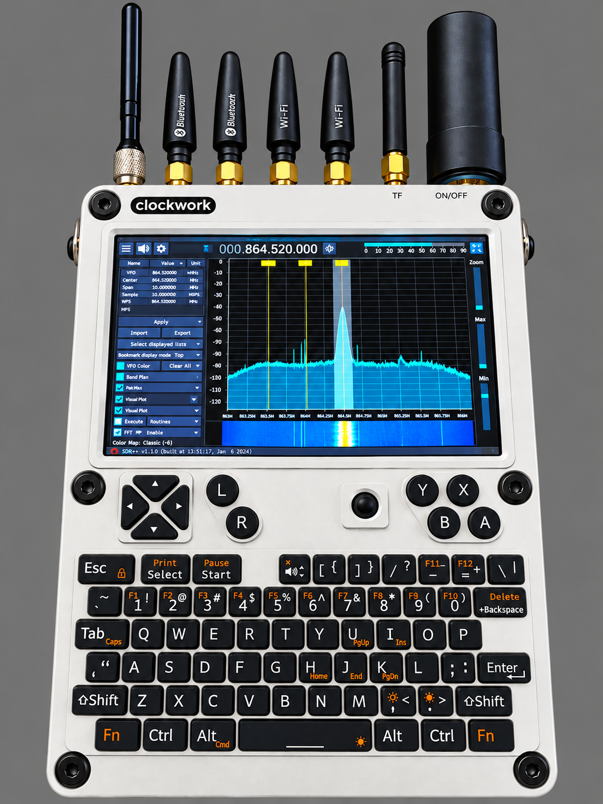
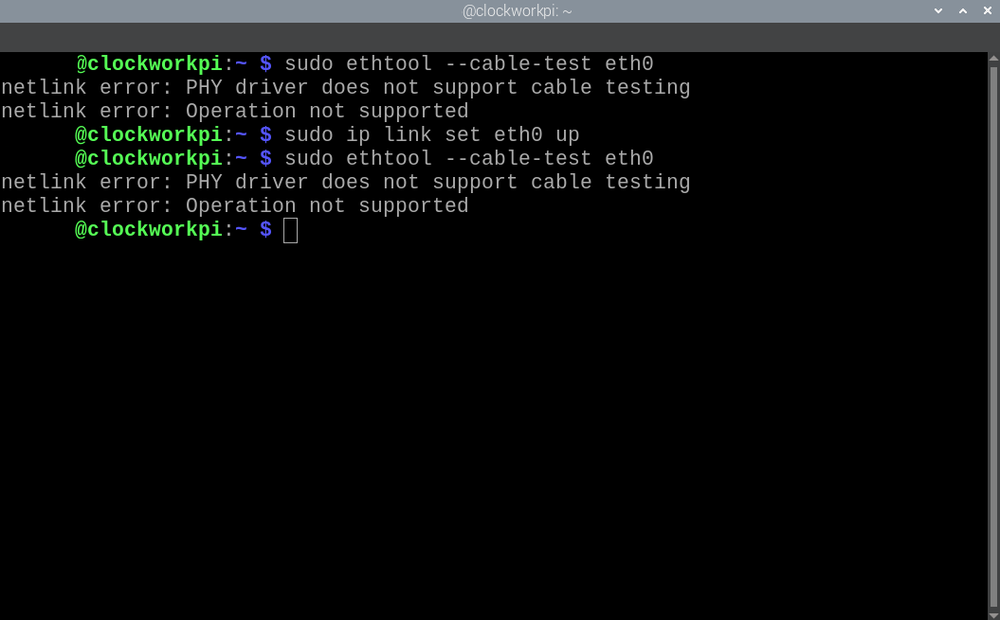
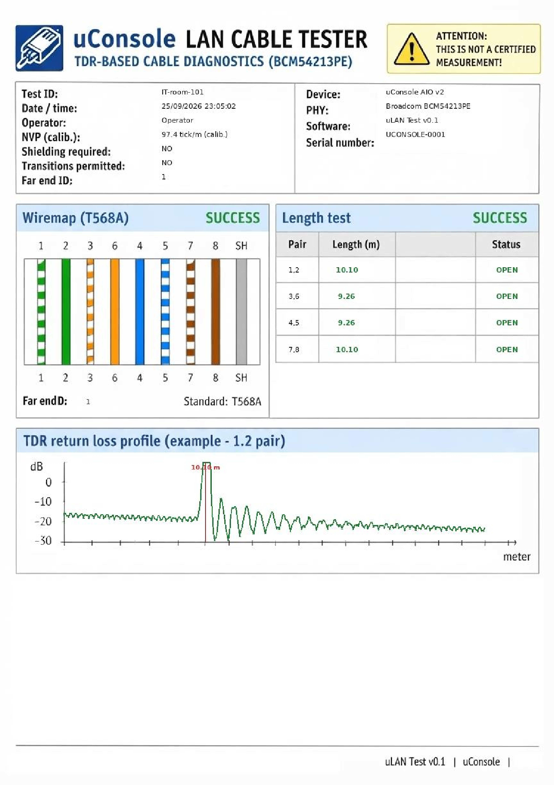

What is it?
The uLAN Cable Tester is a practical experiment in using diagnostic functionality already present in an Ethernet PHY. Instead of relying on the standard Linux ethtool --cable-test interface, the project communicates directly with the PHY through MDIO and extended registers.
Cable length is approximate, calibration is experimental, and the PDF graph is an engineering visualisation rather than a raw laboratory-grade TDR waveform. Think of it as more than nothing, less than a professional cable analyser.
What it can do
Required hardware
The tested configuration requires the ClockworkPi uConsole AIO v2 hardware, a dedicated CM4-compatible replacement mainboard, and the required ribbon cable. The original uConsole mainboard is not sufficient and does not provide the connector required for the ribbon cable.
The tested Ethernet PHY reports:
cat /sys/class/net/eth0/phydev/phy_id
0x600d84a2This corresponds to the Broadcom BCM54213PE used by the project. Other PHYs have not been validated.


How the measurement works
Linux knows about the Ethernet PHY, but on the tested hardware the standard cable test interface reports:
netlink error: PHY driver does not support cable testingThe project therefore accesses the PHY directly using MDIO and extended registers, starts the PHY's ECD/TDR measurement sequence, reads the diagnostic values and converts them to an approximate cable length using the project's experimental calibration.

The measurement report
The generated PDF contains the measurement information, individual pair results and an illustrative visualisation. The current tested software uses an experimentally determined conversion factor of 97.4 ticks / metre.

Get the project
Source code
Complete source code, native MDIO helpers, scripts, templates and configuration.
GitHub repository →Installation
The repository contains the full installation and hardware requirements.
Read the installation guide →Project support
If the project is useful to you, you can help fund further hardware experiments and development.
GitHub Sponsors →Hardware used
The project was developed and tested using the ClockworkPi uConsole platform and HackerGadgets AIO V2 hardware. Hardware links will be added here when official affiliate or referral links are available.
License
The project is released under the MIT License. See the LICENSE file in the repository.